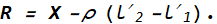

Determination of Temperature Coefficient of Resistance
Carry Foster scalecm Resistance boxΩ Interchange the Position of G1 and G4
Estimate ρR Heater OffOn
×
Procedure
Firstly, to determore ρ make sure that the switch I4 is off
(this will plase a copper strip at G1 or G4). If zero resistance is inserted in the resistance box (using textbox I1), the null point should appear near 50 cm of the carry foster bridge (the galvanometer reasing can be observed in G of the image and the jockey can be moved using the slider or textbox I1).
Now, the resistance of the resistance box is changed in steps (0.1 Ω 0.2 Ω 0.3 Ω) to shift the null point about 5 cm from the mid point. Record the reading of the null point in Table I as l1.
Repeat the step 2 after interchanging the positions of the copper strip and the resistance box using switch I3. Record again the reading as l2
Calculate the resistance per unit length of the carry fostre wire (ρ) using the equation,
where X is the resistance inserted in the the resistance box.
Now, to determine the resistance of the unknown resistance coil at room temperature, make sure that the heater is turned off (switch I5 is turned off and the digital thermometer should show around 20℃).
Remove the copper strip by switching on the key I4. After that, record the reading of the null point in Table II. Repeat the same by interchanging the positions of unknown resistance R and the resistance box X.
Let, l'1 and l'2 are the reading of null point for both reading respectively. Then the resistance of the unknown coil at room temperature is given by

Now turn on the heater using the key I5 and moniter the temperature reading (T). Initially the temperature should change rapidly, but later it changes gradually near equlibrium. When the temperature become steady a notificaion will appear (S). During this process (change of temperature), the heater cannot be turned off. (Similarly, the heater cannot be turned on while temperature become steady at room temperature.)
Repeat the step 6 and step 7 in order to estimate the resistance of the unknown coil at boiling point of the liquid (in this case water).
Now calculate the temperature coefficient of the resistance coil using the expression,
where, R1 and R2 are the resistance of the unknown coil at temperature T1℃ and T1℃
r1 and r2 are the resistances attached at G1 and G2 respectively. r1 = 1Ω and r2 = 1Ω.
The slider can be tuned by pressing the arrow buttons on keyboard.